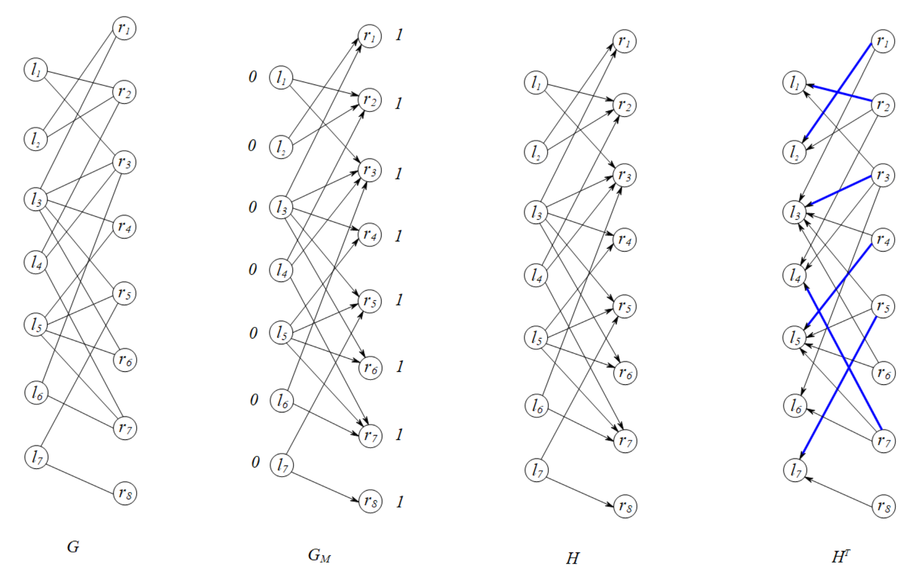
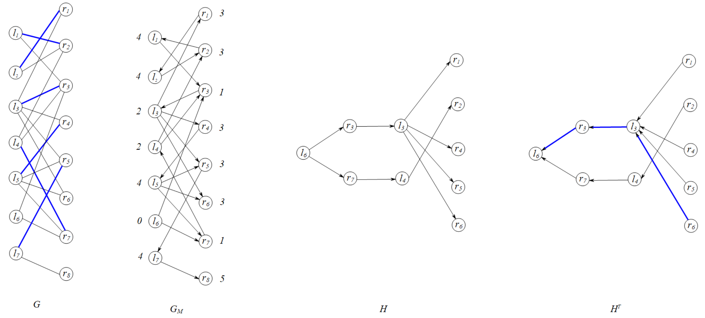

算法导论25.1 Exercises 答案
25.1-1
无论是正向BFS阶段还是反向DFS阶段，如果当前节点有多条出边，我们考虑以\(l_1,l_2,l_3,l_4,l_5,l_6,l_7,r_1,r_2,r_3,r_4,r_5,r_6,r_7,r_8\)的顺序来枚举这些出边。
第\(1\)次迭代如下图所示，找到了增广路径集合\(\mathscr{P_1}=\{(l_1,r_2),(l_2,r_1),(l_3,r_3),(l_4,r_7),(l_5,r_4),(l_7,r_5)\}\)。

第\(2\)次迭代如下图所示，找到了增广路径集合\(\mathscr{P_2}=\{(l_6,r_3,l_3,r_6)\}\)。

最终求得的匹配如下图所示，所求得的最大匹配是\(M=\{(l_1,r_2),(l_2,r_1),(l_3,r_6),(l_4,r_7),(l_5,r_4),(l_6,r_3),(l_7,r_5)\}\)。

25.1-2
相同点：它们都是用于对当前解进行迭代，逐渐让当前解成为最优解。
不同点：
- 解的叠加方式不同。最大流的增广路径是按照定义\(f\uparrow f'\)的定义进行叠加，而最大匹配的增广路径则是将这条路径中所有的边进行“反相”操作（即如果这条路径\(P\)中的每条边\((u,v)\)在解中存在，那么下一个解中将会没有这条边，否则将这条边添加进这个解中）。
- 增广路径边数限制不一样。最大流的增广路径对边数没有要求，而最大匹配的增广路径边数必定为奇数。
25.1-3
好处在于，不会访问到层数大于\(d\)的节点，因此也不需要进行任何合法性判断。
由于第\(0\)层的节点都是在图\(G\)中尚未得到匹配的左部节点，因此在图\(G_M\)中不会有入边。由于\(H\)的边集是\(G_M\)的边集的子集，因此在\(H^T\)中，尚未得到匹配的左部节点不会有出边，因此不会访问到其它无关节点。
如果从\(H\)正向DFS寻找增广路径集合，那么需要判断当前访问的节点是否大于必须层数\(d\)，如果大于，那么及时返回，避免非法访问。
25.1-4
在第\(1\)轮迭代中，搜索得到的增广路径集合的路径长度均为\(1\)。由引理25.5可知，随着整个迭代过程的进行，增广路径的长度必定是严格增长的。此外，由于增广路径是分别交替在\(M,E-M\)中产生的，并且第一条边和最后一条边都属于\(E-M\)，因此每一轮求解的增广路径长度必定比上一轮的长度大于等于\(2\)。也就是说，在第\(m\)轮迭代repeat循环时，必定有\(q\ge 2m-1\)。
迭代了\(\lceil\sqrt{N}/2\rceil\)轮后，那么此时有\(q\ge 2\lceil\sqrt{N}/2\rceil-1\ge \lceil\sqrt{N}\rceil-1\)。按照引理25.6，达到最大匹配所仍然需要的迭代数至多为\(\dfrac{|V|}{(\lceil\sqrt{N}\rceil+1)-1}=\dfrac{|V|}{\lceil\sqrt{N}\rceil}\le \sqrt{N}\)。
因此总共至多需要\(\lceil\sqrt{N/2}\rceil+\sqrt{N}\le \lceil3\sqrt{N}/2\rceil\)轮迭代即可得到最大匹配。
\(\star\) 25.1-5
首先证明充分性。令\(M\)是这个图的完美匹配。令\(M[x]\)表示和节点\(x\)匹配的另一个节点。那么由于\(M\)是一个完美匹配，因此\(\forall x\in V,M[x]\)都有定义，并且\(\forall x,y\in V,x\neq y\)，都有\(M[x]\neq M[y]\)。
对于任意\(A\subseteq L\)，按照上面的结论，\(\forall x,y\in A,x\neq y\)，都有\(M[x]\neq M[y]\)。因此\(|A|=|\{M[x]\mid x\in A\}|\)。由于\(M[x]\)是\(x\)的邻居，即\((x,M[x])\in E\)，因此\(|\{M[x]\mid x\in A\}|\le |N(A)|\)。因此最终可以证明\(|A|\le |N(A)|\)，充分性成立。
接下来证明必要性。构造流网络\(G'=(V',E')\)，其中\(V'=V\cup\{s,t\},\forall l\in L,(s,l)\in E',c(s,l)=1;\forall r\in R,(r,t)\in E',c(r,t)=1\)。并且对于\(\forall (l,r)\in E,(l,r)\in E',c(l,r)=\infty\)。
按照推论24.11（无论\(c(l,r)\)是取\(1\)还是\(\infty\)，推论24.11均成立，论证方式相同），如果\(G\)具有一个完美匹配，那么意味着需要证明\(G'\)的最大流为\(|L|\)，就意味着\(G'\)的最小割值为\(|L|\)，同时也意味着对于任意关于\(G'\)的割\((S,T)\)，都有\(c(S,T)\ge |V|\)。
接下来通过证明对于任意关于\(G'\)的割\((S,T)\)，都有\(c(S,T)\ge |V|\)，从而证明\(G\)存在完美匹配。任意取\(G'\)的一个有限容量割\((S,T)\)（这意味着割\((S,T)\)不会有形如\((l,r)\)的边横跨过，并且如果\((S,T)\)是一个无限容量割，这直接导出结论成立），假设\(L\)中有\(k\)个节点在\(S\)中，令\(X=L\cap S\)，那么\(L\)中有\(|L|-k\)个节点在\(T\)中。
由于\((S,T)\)是一个有限容量割，因此\(\forall (l,r)\in E\)，如果\(l\in S\)，那么\(r\in S\)，这意味着\(N(X)\subseteq S\)。因此\(c(S,T)\ge |L-X|+|N(X)|\ge (|L|-k)+k=|L|\)。最终原结论得证。
25.1-6
本定理使用反证法证明。假设\(\exists A\subseteq L\)，使得\(|A|>N(A)\)成立。那么可知左部点集\(A\)中所有边的度数和为\(d|A|\)，并且这\(d|A|\)条边都连到右部集合\(N(A)\)中的所有节点，按照抽屉原理，必定存在一个节点\(v\in N(A)\)，使得\(v\)的度数大于\(d\)，从而和图\(G\)是\(d\)正则的矛盾。因此，\(\forall A\subseteq L\)，都有\(|A|\le N(A)\)。
接下来证明\(d\)正则二分图\(G\)都包含\(d\)个不相交匹配。使用归纳法来证明。对于任何\(1\)正则二分图\(G_1\)，按照上面的结论，\(G_1\)存在一个完美匹配。由于每个节点都只有一度，因此所有边都恰好被使用了，此时\(G_1\)恰好有且只有\(1\)个完美匹配。原结论成立。现在考虑\(d\)正则图\(G_d=(V,E)\)，假设对于\(e=1,2,3,\dots,d-1,e\)正则图都满足这个结论。那么根据上面的结论，\(G_d\)存在一个完美匹配\(M\)。从\(E\)中移除所有\(M\)中的边后，所有点的度数都减少了\(1\)，那么\(G_d'=(V,E-M)\)是一个\(d-1\)正则图，因此\(G_d'\)存在\(d-1\)个不相交完美匹配，\(G_d'\)中的\(d-1\)个不相交完美匹配和\(M\)构成了\(G_d\)的\(d\)个不相交完美匹配，因此原结论成立。